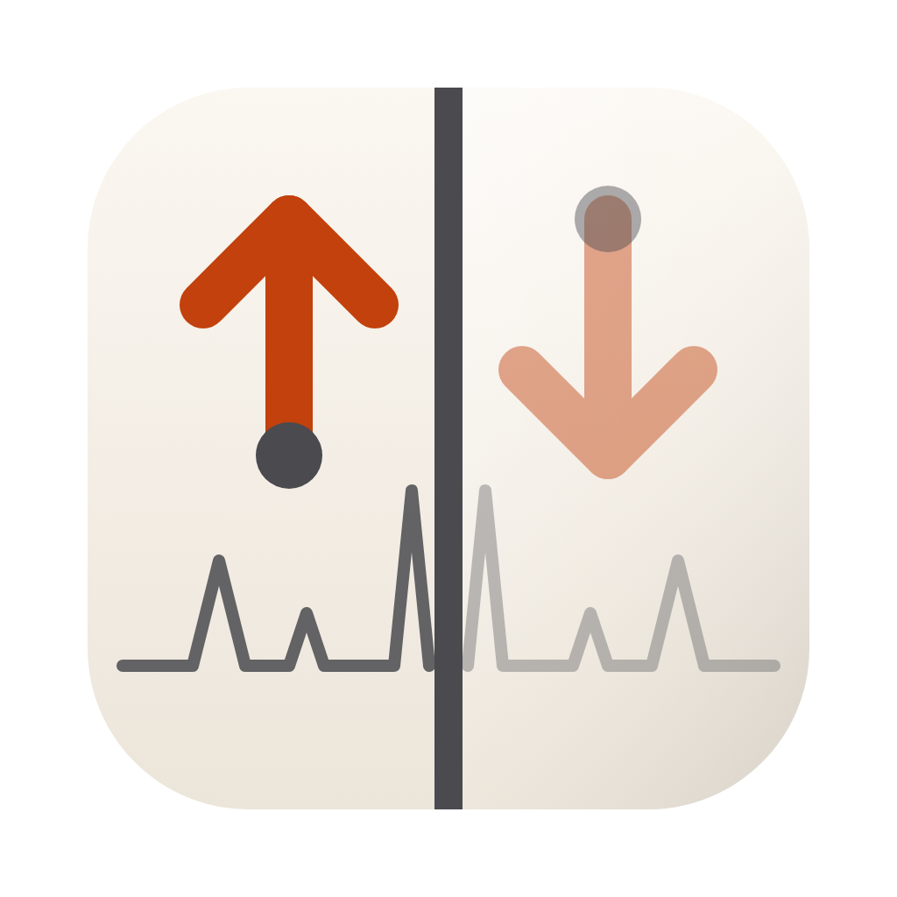
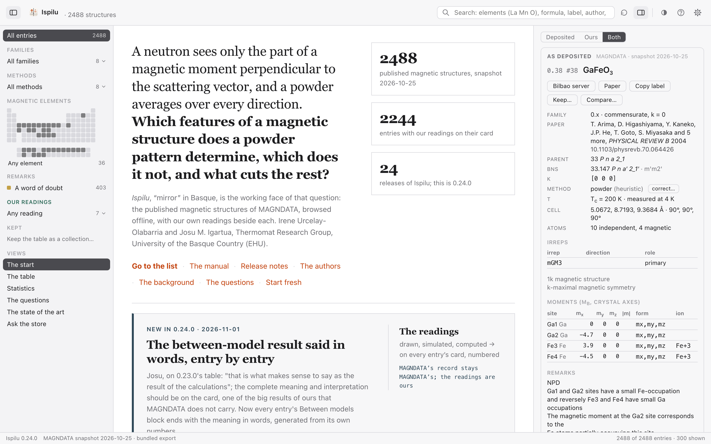
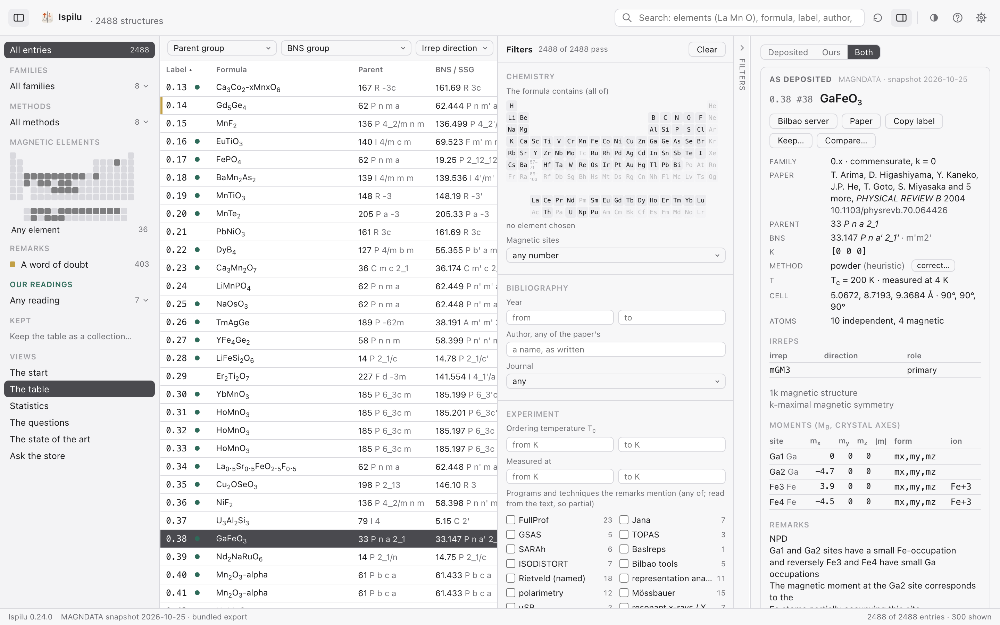

Ispilu · a Mac app for MAGNDATA, the database of published magnetic structuresThe published magnetic structures, offline, with our readings beside each
Ispilu, “mirror” in Basque, is a mirror of MAGNDATA, the Bilbao Crystallographic Server's collection of published magnetic structures, as a Mac app that needs no server and no network; and, on every entry's card, a second layer of our own: the structure drawn, the diffractogram simulated, and which other magnetic models a powder neutron pattern cannot tell from the published one.
1The start
The question the app serves, the people, the ways in, the last release. The name and the icon at the top left bring it back; Start fresh clears every selection, filter and search.

2The table and the card
Every published magnetic structure of MAGNDATA in one table: label, formula, parent, magnetic group, k, irreps, method, temperatures. The card, in the inspector, in two parts: As deposited, MAGNDATA's record untouched, and Our readings, numbered, what we draw, simulate and compute on that entry.

3The periodic table
The magnetic elements chosen on a periodic table, small in the sidebar and large under the mouse, lit for the elements present within the selection; a click selects, ⌘-click adds, a right-click opens the element's card with its neutron form factors and scattering lengths.

4The filters
A drawer of finer criteria after the ICSD's: the formula's elements, the magnetic sites, the year, an author, the journal, the temperatures, the programs and techniques the remarks mention, the crystal system, the moments, our readings. Every selection is a sentence of chips, and the table can be kept as a collection.

5Between models, said in words
The reading MAGNDATA does not carry: for every commensurate entry, every magnetic model the symmetry of its cell allows, each fitted to the published pattern. The card shows the published model and the nearest alternative side by side, names the domains, and says the verdict in words: a structural non-identifiability when another model gives the same powder pattern, a practical one when it is barely told apart, or the pattern determining the model.

6The diffractogram, simulated at will
The forward model on the entry's structure: wavelength, range, the width constant or Caglioti's, the moments scaled, nuclear and magnetic apart, the strongest lines named by hkl; a candidate model of the audit drawn dashed over the published pattern; the profile copied as CSV.

7The structure drawn
The magnetic cell from the file, atoms and moments as arrows, turned and zoomed in a window of its own, a still on the card.

8Two entries side by side
The same compound at another temperature, another model, or any two entries: one table with the entries as columns, the differing rows marked; only what differs, if you like.

What it does
- Every published magnetic structure of MAGNDATA, offline. The 2488 entries of the snapshot, with their symmetry, moments, irreps, papers and remarks, in a window that needs no server and no network.
- Collections with counts in the sidebar, as pop-up rows that never scroll: families, experimental methods, the magnetic elements on a periodic table, the entries whose remarks carry a word of doubt, our readings. One click selects only that collection; ⌘-click combines.
- The periodic table and the element's card: the magnetic element chosen on the table; a right-click on any element opens its card, the neutron tables (coherent scattering length, the form-factor coefficients of its ions and their curves) and what the snapshot holds for it, with the entries one click away.
- The filters drawer: a vertical tab at the right of the table opens a panel of criteria in sections, after the ICSD's search: the elements the formula contains, the number of magnetic sites; year, first author, journal; the ordering and measuring temperatures, the programs and techniques the remarks mention; the parent's crystal system; and, under a rule and in moss, the thesis's own readings. Every criterion is a chip above the table.
- Facets and search: parent group, BNS group, irrep direction type, number of irreps, k-maximality; the search understands element symbols (La Mn O), formulas with or without spaces (LaMnO3, lamn), labels, authors and words, and ranks the matches.
- The entry's card in the inspector, in two sub-cards: As deposited, MAGNDATA's record (paper and DOI, parent and magnetic group, propagation or modulation vector, temperatures, cell, irreps with role and direction, moments along the crystal axes, the remarks marked when they admit a doubt); and Our readings, in moss, our layer on that entry (below), as numbered contributions: the structure drawn by us from the file, the form factors of the ions we assume, and what the forward model computed, the uncertainties, the audit within the model, the rotations, the tests, the audit between models (version 1: the colourings of the magnetic cell's family group as candidate models, every commensurate entry, whether the pattern tells the published one from them), and the diffractogram simulated by the forward model, the nuclear profile in graphite and the magnetic in orange.
- The diffractogram, at will: Simulate… on the card (⇧⌘P) opens the forward model in a window of its own: the wavelength, the 2θ range, the peak width (constant, or Caglioti's U V W as a refinement program reports them), the moments scaled from zero to twice the published, nuclear or magnetic or both, √I, the strongest lines named by hkl, the profile copied as CSV. The paper's wavelength is offered when the remarks give it or name an instrument; otherwise the model's 2.4 Å. The model is the thesis's version 0, in the window the same recipe as in Python, checked line against line. Beside a candidate model lists the magnetic models the parent's colourings allow (the audit between models) and draws the chosen one's magnetic pattern dashed in moss over the published one, with the distance between the two: the picture of why the pattern tells two models apart, or cannot.
- Our readings, per entry: the deposited uncertainties as the GUM reads them, the audit of the published model in the forward model (which of its parameters the powder pattern sees at first order, which only at second order, the weakest seen direction, the weakly seen parameters by name), the rigid rotations of every moment about a, b and c and which of them leave the pattern unchanged, and the result of each test run on the entry against FullProf or the diagnostic. A switch above the card shows either layer or both; a moss dot in the table marks the entries that carry readings; the sidebar selects by them.
- One step to the source: the entry at the Bilbao server (⌘↩), the paper by its DOI (⌥⌘↩), from the card, the Entry menu or the right-click menu.
- Copy and export: the label (⇧⌘C), the card as text, the filtered list as CSV (⇧⌘E).
- Statistics: the collection in numbers, the same figures as the thesis site.
- A Mac app in the house style: the title bar the app's own, the system's context menu, light and dark, graphite accent, dividers that drag, the layout and the filters remembered, Settings with panes, What's New, this manual, ideas noted from inside.
- The structure drawn from the file: on the card, a still of the magnetic cell with the atoms by element and the moments as orange arrows; Draw the structure (⌘D) opens it in a window of its own, to rotate, zoom, look along a, b or c, show all atoms or the magnetic only, the parent cell dashed where the file gives the transformation, the site labels, the arrows' scale; a click on a site follows its orbit. The atoms are generated from the file's independent sites by the file's own magnetic operations, the moments carried as axial vectors with the time-reversal sign; nothing beyond the file is computed. Incommensurate structures are not drawn yet.
- Collections of one's own: a named set of entries kept by hand. Keep… on the card (⇧⌘K) puts the entry in a collection or takes it out; Keep the table as a collection… in the sidebar keeps what the table shows. Each collection is a row of the sidebar's Kept group with its count: a click shows its entries, ⌘-click combines, ✕ deletes, right-click opens its menu (the labels or the entries as CSV copied, rename, the file in Finder, delete). Kept in your Library, in collections.json.
- Two entries side by side: Compare… on the card (⌥⌘D) offers the entry selected before and the other entries of the same compound, by temperature; the two open in a window of their own as one table, the entries as columns, every row of the record and of our readings, the differing rows marked (ochre for the record, moss for ours), the structures drawn, only what differs to hide the rest.
- The method corrected by hand: the method on the card is the mirror's heuristic reading of the file's comments; correct… beside it offers the eight classes and asks a line of reason. The note is kept in your Library (curation.json), shown at once as "noted here, not yet in the project", and the sidebar's counts follow;
magdata/tools/curation_from_app.pybrings the notes into the project's curation, after which the class reads "corrected by hand". The mirror's column is never edited.
Versions
| version | date | |
|---|---|---|
| 0.25.0 | 2026-11-01 | The credit, the way papers give it |
| 0.24.0 | 2026-11-01 | The between-model result said in words, entry by entry |
| 0.23.0 | 2026-11-01 | The alternative model shown beside the published one |
| 0.22.0 | 2026-11-01 | The domain test corrected for shared positions; the group's list without the sentence |
| 0.21.0 | 2026-11-01 | The between-model audit complete on every card |
| 0.20.0 | 2026-11-01 | The group corrected; the About without the thesis; the lines table to the right; the element's card from the form factors |
| 0.19.0 | 2026-11-01 | The landing in the family's look; the name goes home; a fresh start |
| 0.18.0 | 2026-11-01 | The audit between models over every commensurate entry, domains apart; the landing; the group |
| 0.17.0 | 2026-11-01 | The instrument's resolution, Caglioti's |
| 0.16.0 | 2026-11-01 | A candidate model beside the published one, on the diffractogram |
| 0.15.0 | 2026-11-01 | The diffractogram, simulated at will |
| 0.14.0 | 2026-11-01 | Our readings as numbered contributions; the audit between models |
| 0.13.0 | 2026-11-01 | About, with air; the drawings as ours; a page on the site |
| 0.12.0 | 2026-11-01 | The method class corrected by hand |
| 0.11.0 | 2026-11-01 | Two entries side by side |
| 0.10.0 | 2026-11-01 | Collections of one's own |
| 0.9.0 | 2026-11-01 | ⟨j₂⟩ beside ⟨j₀⟩; the ion of every moment |
| 0.8.0 | 2026-11-01 | The structure drawn from the file |
| 0.7.0 | 2026-11-01 | An icon of its own; who makes it; the snapshot named |
| 0.6.0 | 2026-11-01 | Orange on the periodic table; every author; the help panels as windows |
| 0.5.0 | 2026-11-01 | The card as a window; the periodic table in the sidebar |
| 0.4.0 | 2026-11-01 | The sidebar without scrolling; the periodic table; the filters drawer |
| 0.3.0 | 2026-11-01 | Our readings on every card; the smarter search; the audit and GUM charts |
| 0.2.0 | 2026-10-31 | The store, read directly; the questions; ask |
| 0.1.0 | 2026-10-31 | The window |
Every release's notes
0.25.0 · The credit, the way papers give it 2026-11-01
Josu: Irene and he responsible for the project, the work by the group, everyone included. Done the way a paper does it: the group is the author, two people are responsible, nobody is ranked. The wording lives in one place, GROUP.yml, and every face reads it.
Changed
- "The About: \"Ispilu is a work of the Thermomat Research Group (Research Group on Thermophysical Properties of Materials), University of the Basque Country (EHU).\" Irene Urcelay-Olabarria and Josu M. Igartua, responsible for it; \"The group makes it:\" the eleven names with their roles, in the staff page's order; a line to cite it (the group as author, the two responsible named, the version and the year); the copyright the group's."
- "The start page says the same in one line, and in full under \"The group\"; the manual's first line, the square's text and the app's page say it too, from the same file."
0.24.0 · The between-model result said in words, entry by entry 2026-11-01
Josu, on 0.23.0's table: "that is what makes sense to say as the result of the calculations"; the complete meaning and interpretation should be on the card, one of the big results of ours that MAGNDATA does not carry. Now every entry's Between models block ends with the meaning in words, generated from its own numbers.
Added
- "Three paragraphs under the table, in the moss wash: what the numbers say (the colourings, the candidate models, the fit); the domains, if any, with the lost operation that makes each and why they are not alternatives; the verdict: a structural non-identifiability when another candidate reproduces the pattern (how the two models differ: the same moments turned in the plane perpendicular to c with the angles from a, or reversed on a site, or with other lengths; what cuts it: a single crystal, polarised neutrons, a field, a second probe), a practical one when the nearest is under 5 % away, or the pattern determining the published model among the models this cell's symmetry allows, with model adequacy named as the question outside the test."
0.23.0 · The alternative model shown beside the published one 2026-11-01
Josu, on the card of NdPt6Al3 (0.1043): the block said "1 alternative the pattern cannot tell from the published model" and gave its primed operations, but never showed the alternative itself. Now the block lays the two models side by side, site by site, with the angle between their moments, says in words whether the patterns coincide, and a button overlays the alternative on the diffractogram.
Added
- "Between models, on the card: a table of the published model and the nearest alternative, moments along the crystal axes as the file writes them, |m|, and the angle between the two moments on each site; the operations each model primes; the distance in words (\"the two patterns coincide\", \"differ by x %, barely\", \"the nearest alternative differs by x %\")."
- "\"Overlay the alternative on the diffractogram\": the diffractogram window opens with that candidate drawn dashed over the published pattern (or, if open, switches to it)."
- "The domains of the published model named on the card, each with the lost operation that carries the model onto it."
Changed
- "The export carries the nearest alternative's index and each candidate's domain flag (bm[8], bc[7])."
0.22.0 · The domain test corrected for shared positions; the group's list without the sentence 2026-11-01
Josu asked for a worked example of the between-model audit, and the example, FeMn2O4 (0.1011), exposed a fault: Fe and Mn share one position, and the domain test carried only the first atom at each position, so a domain of the published model was counted as a genuine alternative. Version 1.4 of the audit carries every atom of a position; the whole table recomputed, bundled here. The group's list drops the sentence under Iñigo González de Arrieta's name.
Changed
- "Reading \"Between models\" recomputed for every entry (audit version 1.4): 62 entries have two magnetic elements on one position, and 21 of them had a domain counted as a genuine alternative."
- "The About and the start page list the group's members by name and role only."
0.21.0 · The between-model audit complete on every card 2026-11-01
The thesis database bundled in this release carries the between-model audit for every commensurate entry with a moment, 2244 of 2253: the multi-k entries and the other families join, and the entries whose groups had stalled version 1.2. Version 1.3 of the audit builds the quadratic form from one structure factor per parameter, the same numbers to rounding, hundreds of times faster. The nine entries left are file faults, which the card says plainly.
Changed
- "Reading 8, \"Between models\", on the card of every commensurate entry with a moment; the sidebar's twin readings (an alternative the pattern cannot tell, barely told apart) count over the whole collection."
- "The diffractogram window offers the candidate models for multi-k entries too."
0.20.0 · The group corrected; the About without the thesis; the lines table to the right; the element's card from the form factors 2026-11-01
Josu's corrections of 1 November: Leire Usategui is no longer a member of the group, Mireia Sainz-Menchón and Jon Gabirondo López are doctors, Irati Tolosa Lecea is a PhD candidate; the About window drops its references to the thesis, the co-supervisors' label among them; the diffractogram window's table of lines can sit to the right of the chart, with buttons to arrange the panels; and the form factors on the card open the element's card again, large, in a window of its own.
Added
- "The diffractogram window: \"lines below\", \"to the right\", \"hidden\" arrange the table of the strongest lines; remembered in the settings; the chart redraws to the space it gets."
- "The tips on hover (Josu's image: two tooltips at once, ours and the WebView's, and the tip covering the menu it explained): the control's title moves to our own tip on first hover, so the WebView never shows its second one; a press anywhere hides the tip at once; it waits 0.7 s; ⌥⌘T switches the tips on and off (View ▸ Explain Controls on Hover; Settings ▸ Chrome), and every tip says so."
- "The form factors block on the entry's card: one button per element (\"Fe's card\") opening the element's card in a window of its own, with the form factors large, the coefficients, the scattering lengths and the ions."
Changed
- "The group, as Josu corrected it: Leire Usategui out; Mireia Sainz-Menchón and Jon Gabirondo López as doctors; Irati Tolosa Lecea, PhD candidate; the About and the start page say \"corrected 2026-11-01\" beside the staff page's date."
- "The About: Ispilu is the working face of a question, not of a thesis proposal; the authors without the co-supervisors' label; the drawings, readings and charts \"ours\". The start page says \"our readings\" the same way."
0.19.0 · The landing in the family's look; the name goes home; a fresh start 2026-11-01
Josu, on 0.18.0's landing: not so crowded with text, the content kept, the aspect of the website with the family design kit; a way back to the landing from the background; the name at the top left, with the icon, going to the landing; and a button to reset the last selection and start fresh.
Added
- "The name and the icon at the top left are a button to the start page; the views other than the table carry a crumb, \"‹ The start\" and \"The list\"; the sidebar's row stays."
- "Start fresh (the arrow in the toolbar, and on the start page): nothing selected, no filter, no search, the drawer closed, the sort by label; the collections and the corrections are kept."
Changed
- "The start page in the family kit's look, its two typefaces bundled: the question as the headline in serif, the people under it, the ways in as quick links, three tiles (the entries, the entries with readings, the releases), one band for the last release, and what Ispilu does and the group folded under their heads; the content of 0.18.0's landing, with air."
0.18.0 · The audit between models over every commensurate entry, domains apart; the landing; the group 2026-11-01
Version 1.2 of the between-model audit: the candidate models are the colourings of the magnetic cell's family group, the parent's lost translations among its elements as anti-centrings, so the k ≠ 0 commensurate entries and the anti-centred k = 0 ones join the k = 0 ones; and a candidate that one of the parent's lost operations maps the published model onto is a domain of that model, not an alternative, and is counted apart. The card and the sidebar read it for all of them, and the diffractogram's window overlays any candidate. And two of Josu's points: a landing in the central area, and the group listed.
Added
- "The landing (The start, in the sidebar's Views; at launch unless the start page's box or Settings ▸ General says otherwise): the icon, the name and the version, the thesis's line, Go to the list, The manual, Release notes, The authors, The background, The questions; what is new in the last release; what the app does; the people and the group."
- "The Thermomat group's members in the About window and on the landing, from app/GROUP.yml (the group's staff page, 1 November 2026), Irene Urcelay-Olabarria and Josu M. Igartua first."
- "The domain test of the between-model audit: the nuclear symmetry of the magnetic cell is found from the atoms (the parent's lost operations included); a candidate the pattern cannot tell from the published model that one of them carries the published model onto is a domain and is said so on the card, not counted as an alternative."
- "The between-model reading on every commensurate entry's card (k = 0 and k ≠ 0); the two sidebar rows (an alternative the pattern cannot tell, one barely told apart) now count them all."
- "In the diffractogram's window, the candidates of k ≠ 0 entries overlaid too: the colouring applied to the file's operations and centrings; checked on 1.4, whose twin gives the published pattern in the window as in the audit."
Changed
- "The card names the colourings as those of the magnetic cell's family group; for k = 0 without anti-centring that is the parent's point group, as before."
Known
- A published model whose moments depart from their own symmetry form fits its pattern imperfectly (0.1175, 1 %); the card will say so in a later release.
0.17.0 · The instrument's resolution, Caglioti's 2026-11-01
The simulation's peaks were one width everywhere. The model of record and the window now take Caglioti's resolution function, U, V, W in degrees squared as a refinement program reports them, the width growing with the angle as an instrument's does; the first of the paper's values the records will carry (I22), typed by hand until then.
Added
- "Caglioti U V W in the diffractogram's window, beside the constant FWHM: FWHM² = U tan²θ + V tan θ + W, floored at 0.01°; the bar reads the width at 20° and at 100°."
- The same in the forward model (magdb/pattern.py, caglioti), the window's port checked against it by the battery on GaFeO3.
Known
- The audit and the between-model audit keep the constant width (their distances compare models, not instruments).
0.16.0 · A candidate model beside the published one, on the diffractogram 2026-11-01
The between-model audit now keeps each candidate's fitted moments, and the diffractogram's window draws a chosen candidate's magnetic pattern dashed over the published one, with the distance between the two: why the powder pattern tells two colourings apart, or cannot, in a picture. And the prompt for reading the papers' experiments, a contribution of its own (idea I22), with its place in the curation layer.
Added
- "In the diffractogram's window, \"beside a candidate model\": every magnetic model of the parent's colourings (audit version 1), with its primed operations and its distance; the chosen one's magnetic pattern in moss, dashed, and the distance read on the current settings."
- "The export and the store carry each entry's candidates with their fitted moments (bc); the audit keeps them (between_v1, m_cart) and runs again with --redo."
- "curation/experiments/PROMPT.md: the prompt that a reader follows to return, per measurement of a paper, the instrument, the wavelength, the range, the temperatures, the sample environment, the resolution function and the profile, the program, the R-factors, the refined moments, every value quoted with its place or \"not stated\"; curation/experiments.yml to hold the records."
Known
- The paper's instrument is not yet offered from the records (none read yet); the window reads the remarks only.
0.15.0 · The diffractogram, simulated at will 2026-11-01
Josu's proposal: the powder diffractogram from the data, from the paper's values where the file has them, and simulated at will. The forward model (version 0) is now in the window too, ported line for line from the model of record and checked against it, so that any Mac simulates any entry without Python: the diffractogram on the card as a still, and in a window of its own with the wavelength, the range, the width, the moments scaled, nuclear or magnetic or both, and the strongest lines named.
Added
- "The diffractogram as a contribution on the card: the nuclear profile in graphite and the magnetic in orange at the model's defaults (2.4 Å, to 120°), the strongest magnetic lines named by hkl; Simulate… (Entry ▸ Simulate the Diffractogram, ⇧⌘P)."
- "The diffractogram's window (pattern.html, open_pattern): λ, 2θ range, FWHM, the moments scaled from 0 to twice the published, both/nuclear/magnetic, √I, the hkl labels, a hover readout, the ten strongest magnetic and nuclear lines, the profile copied as CSV."
- "The paper's values: an explicit wavelength in the remarks is offered with one click; an instrument named there brings its usual wavelength; a time-of-flight instrument is said to have none; otherwise the model's 2.4 Å. The files carry no wavelength tag: two remarks give one, twenty name an instrument."
- The forward model in JavaScript (pattern.js), the same recipe as magdb/pattern.py; the battery compares the two on the sample entries (tools/export_patterns.py writes the Python profiles).
Known
- Incommensurate entries are not simulated (the model's v0).
- No Debye–Waller factor, resolution function, absorption or preferred orientation, as in the model of record; the simulation shows which lines move when a model moves, not an instrument's pattern.
0.14.0 · Our readings as numbered contributions; the audit between models 2026-11-01
Josu, on 0.13.0: a rule before our readings, a lighter wash, and the subsections separated so that the eye counts the contributions. And step 7 taken: the between-model audit, version 1, over the k = 0 entries, as a new reading on every card and two rows of the sidebar.
Added
- "The between-model reading on the card (audit version 1): the colourings of the parent group, how many are magnetic models, whether the powder pattern tells the published model from every alternative, cannot tell it from some, or barely can, and how far the nearest alternative is, with its primed operations; for the k = 0 entries the forward model computes."
- "Two rows of our readings in the sidebar and the drawer: an alternative model the pattern cannot tell; an alternative barely told apart (under 5 %)."
- The questions Q7H–Q7J, the audit between models in counting form.
Changed
- "Our readings as numbered contributions, each its own block under a rule: the structure, the form factors, the uncertainties, the audit, the rotations, each test, the models between; the head counts them; a rule before the sub-card; the moss wash lighter."
Known
- Version 1 covers k = 0 only; the k ≠ 0 entries wait for the analysis of the star of k.
0.13.0 · About, with air; the drawings as ours; a page on the site 2026-11-01
Josu, on 0.12.0: the About panel should breathe and appeal, say EHU alone, and link the group; the drawings and charts are ours and should appear as such on the card; and the app should have a page on his site with the description, the release notes, the versions and the download, to share with Irene.
Added
- About Ispilu as a window of the app's own (Ispilu ▸ About Ispilu), with the icon, the version, the thesis's question, the two names, the Thermomat Research Group with its link, EHU, MAGNDATA with its link and its authors, the tables, the snapshot, the copyright.
- "The app's page on the site, generated from the release notes by tools/site-page.py into the square as an unlisted text: the description, the download of the current version (a release of the private repository), what it does, the versions, every release's notes; refreshed with each release by the same tool and the square's go."
- npm run copy makes the zip for a release; the release itself holds it (GitHub, private repository, v<version>).
Changed
- "The structure drawn and the form factors of the assumed ions moved from \"As deposited\" to \"Our readings\", under their own heads, \"drawn by us from the file\" and \"the ions we assume\"; what we computed follows under \"Computed (the forward model, v0)\". The ion column stays in the deposited moments table."
- EHU alone, not UPV/EHU, everywhere the app names the university.
Known
- The download asks for a GitHub account with access to the private repository until the publication is decided (D8, D18).
0.12.0 · The method class corrected by hand 2026-11-01
The fifth of the next steps (idea 4). The experimental method of an entry is the ingest's heuristic over the file's comments; where it reads wrong, correct… beside it on the card notes the class by hand, with a line of reason. The note is kept in a file of the user's, shown at once and marked; the project's tool brings it into the curation layer, from which the store and the site carry it, marked "corrected by hand". The mirror's own column is never edited.
Added
- "correct… beside the method on the card: a menu of the eight classes with the current one checked, a line of reason asked; \"noted here, not yet in the project\" on the card until the correction reaches the curation; \"Withdraw the note\" in the menu; the sidebar's method counts follow at once."
- The corrections kept in ~/Library/Application Support/Ispilu/curation.json (curation_read, curation_write); magdata/tools/curation_from_app.py brings them into curation/methods.yml; derive.py applies them as d_entry.method_curated; the export and the store read the corrected class (m) beside the heuristic's (mh) with a mark (mc).
Known
- The round trip needs the tool run and the data rebuilt (ecosystem/tools/build.py) for the correction to reach the site and the next bundle; until then the app shows it from its own file.
0.11.0 · Two entries side by side 2026-11-01
The fourth of the next steps (idea 5). Compare… on the card offers the entry selected before and the other entries of the same compound, by temperature; the two open side by side in a window of their own, one table with the entries as columns, every row of the record and of our readings, the rows that differ marked, the two structures drawn.
Added
- "Compare… on the card (Entry ▸ Compare With…, ⌥⌘D): a menu with the entry selected before and the other entries of the same compound, each with its measuring temperature and magnetic group."
- "The comparison window (compare.html, open_compare): compound, family, paper, parent, magnetic group, k, irreps, method, temperatures, cell, atoms, moments per site, the structures drawn, remarks, the file; then our readings, uncertainties, audit, rotations, tests. A differing row is marked in ochre (the record) or moss (ours); \"only what differs\" hides the rest; the count of differing rows in the bar."
Changed
- The card's action row wraps when the inspector is narrow (four buttons since 0.10.0, five now).
Known
- Two entries of different compounds compare as well; the structures are drawn, never marked as differing.
0.10.0 · Collections of one's own 2026-11-01
The third of the next steps (idea 3). A collection is a named set of entries kept by hand - the group's cases, the audit's sample, the entries of a paper - with a name, a number, a place in the sidebar, a ✕ and a right-click menu, as the conventions ask of anything the hand makes. Kept in a file of the user's, exported as a list of labels or as CSV.
Added
- "The sidebar's Kept group: each collection a row with its count; click shows its entries (and combines with the other groups as ever); ✕ on hover deletes it after a question; right-click opens its menu: Show its entries, Copy the labels, Copy its entries as CSV, Rename, Show the file in Finder, Delete."
- "\"Keep the table as a collection…\" / \"New collection from the table…\" at the group's end: the entries the table shows now, under a name asked for."
- "Keep… on the card (Entry ▸ Keep in a Collection…, ⇧⌘K): a menu of the collections with a check mark on those holding the entry, a click toggles; New collection with this entry… at its end. The button reads Keep ✓ when the entry is kept somewhere."
- A chip for a kept collection in the selection; Clear All Filters releases it.
- The collections kept whole in ~/Library/Application Support/Ispilu/collections.json (JSON, version 1, one list); the browser face keeps them in localStorage.
Known
- The names are asked for with the system's prompt sheet; a sheet of the app's own is for later.
- A collection is not shared between Macs by itself; the file can be copied.
0.9.0 · ⟨j₂⟩ beside ⟨j₀⟩; the ion of every moment 2026-11-01
The second of the next steps (idea 10). The element's card draws ⟨j₂⟩ dashed beside ⟨j₀⟩ for each ion and lists both sets of coefficients; the entry's card names the ion each moment stands on, by the forward model's rule, and draws the form factors of those ions. The tables now carry the model's default ions.
Added
- ⟨j₂⟩(s), with its factor s², dashed beside ⟨j₀⟩ on the element's card, in the hover readout and in the coefficients table; a line saying which ion the forward model takes for the element.
- "On the entry's card, an ion column in the Moments table: the file gives no charge, so the forward model's default ion for the element (Mn+3, Fe+3, Co+2, Ni+2, …), or the nearest charge the tables have; below, the form factors of those ions, ⟨j₀⟩ solid and ⟨j₂⟩ dashed, with the note that v0 uses ⟨j₀⟩ in the dipole approximation."
- The neutron tables regenerated with the default ions and the fallback order of the model (tools/export_tables.py, reference/neutron_tables.json, the markdown with ⟨j₂⟩).
Known
- A charge written in the file (type_symbol with a sign) is not read yet; every ion is the model's assumption, said so on the card.
- The structure is drawn for commensurate entries only (0.8.0).
0.8.0 · The structure drawn from the file 2026-11-01
The first of the next steps (idea 1, the site's I9): the magnetic structure drawn from the mcif, in the card as a still and in a window of its own, interactive. The atoms of the magnetic cell generated from the file's independent sites by the file's own magnetic operations and centrings, the moments carried as axial vectors with the time-reversal sign, the magnetic cell framed and the parent cell dashed where the file gives the transformation. Nothing of magnetism computed beyond what the file states.
Added
- "A Structure section on the card: a still of the structure (atoms as discs by element, moments as orange arrows, the cells), its legend, the count of atoms and moments; the button Draw the structure (Entry ▸ Draw the Structure, ⌘D)."
- "The structure's window (structure.html, open_structure), one per entry: drag rotates, scroll zooms, views along a, b, c or oblique; all atoms or the magnetic only, the moments, the magnetic cell, the parent cell, the site labels; the arrows' scale in Å per μB; a click on a site follows its orbit and reads its moment."
- The drawing is pure JavaScript over SVG (structure.js), the rows read from the store by the app; the browser face carries a sample of eight entries for the battery.
Known
- Incommensurate structures are not drawn yet; the Fourier terms wait for a later release.
- An irrep's pattern highlighted (I9's last clause) needs the mode decomposition per site, which the file does not carry; later.
- The parent cell is drawn from the child transformation without its origin shift, from the magnetic cell's origin.
0.7.0 · An icon of its own; who makes it; the snapshot named 2026-11-01
Josu, 1 November: the icon was still The desk's; the About panel was bare; it should say somewhere that Irene and he are working on this, and name the Thermomat Research Group; and what is the date in the status bar. Ispilu now has its own icon, a magnetic moment and its image in the mirror in the kit's orange on paper; the About panel names the two authors, the group, the thesis's question, MAGNDATA and its authors, the tables; the manual and the README open with the same line; the status bar says what its date is.
Added
- The icon (app/design/icon.svg, rasterised to design/icon.png, the set generated by tauri icon).
- The About panel with the authors, the copyright line, the credits and the link to MAGNDATA at the Bilbao server.
- The first line of the manual and of the README name the authors and the group.
Changed
- "The status bar reads \"MAGNDATA snapshot 2026-10-25\", with a tooltip: the date is the server's export, the day of the mirror's snapshot, not of the build; \"the store\" or \"bundled export\" says where the list came from."
Known
- The structure is still not drawn (idea I9).
0.6.0 · Orange on the periodic table; every author; the help panels as windows 2026-11-01
Josu's note on 0.5.0: the chosen element went nearly blank in the light theme. The periodic table now marks the chosen cell and the cell under the mouse in the kit's orange, light and dark. The export carries every author of each paper, so the search and the drawer's author field find co-authors, and the card names them. What's New, the manual, the shortcuts and the ideas open as windows of their own, like the element's card.
Added
- Every author of the paper in the export (aa) and read from the store; the search matches any of them; the drawer's author field, "Author (any of the paper's)", completes from all of them; the card's Paper line names up to six and counts the rest.
- What's New, the manual, the keyboard shortcuts and the ideas as windows of their own (panel.html, open_panel), one of each, resizable, ⌘W closes; ideas are noted from the window as before. The browser face keeps the dialogs.
Changed
- The periodic table's chosen cell in the kit's orange (#c2410c light, #fb923c dark) with the cell under the mouse in its wash, in the sidebar's small table, the large one and the drawer; the graphite stays the selection colour everywhere else.
Known
- The structure is still not drawn (idea I9).
0.5.0 · The card as a window; the periodic table in the sidebar 2026-11-01
Two more of Josu's proposals of the morning. The element's card is a window of its own in the app, as many as wanted, movable and resizable like any window, its buttons reaching the main window. The periodic table lives small in the sidebar, every element a cell, and grows under the mouse into the table that selects.
Added
- The element's card opens in a window of its own (one per element, brought forward if open; ⌘W closes), with the title bar the app's; "As magnetic", "In the formula" and the compounds act on the main window and bring it forward. The card's rendering shared by the window and the browser face's dialog (ui/card.js); the browser face's dialog has an "Open in a window" button.
- The periodic table small in the sidebar in place of the magnetic elements' pop-up row - lit cells for the elements with entries within the selection, the chosen ones in the accent; a click on a cell acts at once; a hover of a third of a second opens the large table beside it, which closes as the mouse leaves; the selection named under the small table.
Changed
- The sidebar's pop-up rows are three (families, methods, our readings); the elements are the small table.
Known
- What's New, the manual, the shortcuts and the ideas are still dialogs inside the main window; windows of their own are a later release.
- The structure is still not drawn (idea I9).
0.4.0 · The sidebar without scrolling; the periodic table; the filters drawer 2026-11-01
Three proposals of Josu's of this morning. The sidebar's groups are pop-up rows that open a menu, so the sidebar fits the window; a click selects only that item in whichever group, ⌘-click adds to the selection. The magnetic elements are chosen on a periodic table, and a right-click on an element opens its card: the neutron tables (scattering length, form-factor ions and their curves) and what the snapshot holds for it. A vertical tab at the right of the table opens a drawer of criteria in sections, after the ICSD's search: chemistry, bibliography, experiment, symmetry, and under a rule, in moss, the thesis's own readings.
Added
- The sidebar as pop-up rows (families, methods, magnetic elements, our readings) with the selection named on the row; the menu lists every value with its count within the selection and a check mark; ⌘-click in the menu keeps it open for the next addition.
- The periodic table (ui/periodic.js), as the magnetic elements' popover in the sidebar and as the "formula contains" field in the drawer; a cell with no entry is dimmed; the counts within the selection on the cells.
- The element's card, by right-click on any cell - number, name, Sears's coherent scattering length, Brown's <j0> coefficients for each ion of the element with their curves against sin θ/λ (hover reads the values); in the snapshot, the entries that contain it and those that carry it as the magnetic element, the ordering temperatures, the moments, the years, the families, the methods, the parents, the symmetry forms of its moments, the compounds (a click searches); two buttons select those entries.
- "The drawer (View ▸ Show/Hide Filters, ⌥⌘F, or the vertical tab): the formula contains (all of), the number of magnetic sites; year, first author (with completion), journal; ordering and measuring temperature ranges, programs and techniques the remarks mention (any of, read from the text); the parent's crystal system; and ours - the audit's verdicts, the invisible rotation axes, the weakest seen direction below a value, the median relative esd above a value, the tests run. Every criterion is a chip above the table; the tab carries the count of active criteria; the panel's state is remembered."
- The neutron tables of magdata/reference bundled as data/neutron.json by tools/sync-data.py.
Fixed
- "The combined selection: a plain click on a row of another group added to the selection instead of replacing it (the groups combined as and); now a click selects only this, in any group, and ⌘-click combines. The remarks' row and our readings follow the same rule."
- A click on "All entries" left the selection without its audit list and the window stopped filtering.
Known
- The program used is read from the remarks' free text; MAGNDATA's files carry no refinement-software tag, so the field finds the few dozen entries whose remarks name one.
- The first author only, in the author field; the full author lists are in the store (the Ask view) and not yet in the export.
- The form-factor table has <j0> only; <j2>, needed for the orbital part, is for a later release.
- The structure is still not drawn (idea I9).
0.3.0 · Our readings on every card; the smarter search; the audit and GUM charts 2026-11-01
Every entry now carries, beside MAGNDATA's record, the thesis's own readings of it, computed in the forward model and kept in a second database beside the mirror: the uncertainties as the GUM reads them, the audit of the published model, the rigid rotations the powder pattern cannot see, and the tests against FullProf and the diagnostic where they were run. The card shows them as a second sub-card in a colour of their own, moss, with a switch between the record as deposited and ours. The search understands elements and formulas; the sidebar selects by our readings too; the Questions view has the charts of all of it.
Added
- The card in two sub-cards with a switch, Deposited · Ours · Both. "As deposited" is MAGNDATA's record; "Our readings" is the thesis's layer, in moss, used for nothing else, with a left rule; a link at its head opens the charts.
- Our readings per entry, read from thesis.sqlite bundled beside the store - the number of moments with a deposited esd and the median relative esd; the audit (free parameters, seen at first order, at second order only, never; the weakest seen direction; the weakly seen parameters by name); the rigid rotations of 90° about a, b and c and which leave the pattern unchanged; each test's result in a line.
- The sidebar's "Our readings" group selects by them (a weakly seen parameter, an invisible rotation, a sloppy model, no uncertainty deposited, tested against FullProf or the diagnostic), combinable with the other groups; a moss dot beside the label in the table marks an entry that carries readings.
- The search understands element symbols (La Mn O finds the lanthanum manganites, not "polarized"), formulas written without spaces (lamn), labels, authors and words, ranks the matches and explains an empty result; the chips show the active selection and remove its parts.
- The Ispilu number beside the MAGNDATA label on the card and in the table (#1 for 0.1), the same in the site's browser; a biunivocal numbering of the snapshot.
- The Questions view carries the new groups - the GUM (Q90-Q94, who reports uncertainties and since when, by crystal system and direction) and the audit (Q76-Q7G, the percentages of L029 and L030 as charts and maps, the sloppiness buckets, the second-order parameters by stratum, the invisible rotations by crystal system and as a distribution, the tests of the forward model and the diagnostic).
- Light theme - the ochre lighter, the scrollbars pale and thin; the chart colours of the site in the Questions view.
- The window opens a given entry from its URL (sel=label), for the verification battery.
Changed
- npm run install:app quits the running app before copying the bundle and relaunches it; until now a running Ispilu stayed on the old build after an install.
Known
- The tests are on 16 entries (five against FullProf, twelve of the diagnostic sample); the audit and the rotations on the 1887 powder-determined commensurate entries the forward model could compute; the rest of the card says "nothing computed for this entry yet".
- The structure is still not drawn (idea I9).
0.2.0 · The store, read directly; the questions; ask 2026-10-31
The app now opens the mirror's SQLite store itself, read-only, with the same helpers the questions use, so that a question runs identically on the site and in the window. The Questions view shows the catalogue with its charts, the field in motion included; the Ask view is a live SQL console over the store with every saved question one click away.
Added
- The store opened read-only from Rust (rusqlite, immutable), found in the project in development and bundled inside the app otherwise; the table's list comes from it, the bundled export is the fallback; the status bar says which.
- "View ▸ The Table (⌘1), The Questions (⌘2), Ask the Store (⌘3); the same rows in the sidebar's Views."
- The Questions view, the catalogue of questions.yml with the charts of the last site build and the Rosling chart live.
- The Ask view, a SQL console, SELECT only, two thousand rows at most, timing, Copy CSV; the saved questions in a pop-up with their why.
- median, quartile1, quartile3 and REGEXP available in the app's SQL as in magdb/ask.py.
- Combined selections in the sidebar: ⌘-click adds a row, groups combine as and, the counts are recomputed within the selection (faceted navigation); the chips show the path.
- The State of the Art view (⌘3), the state of the art of the field read from the data, its references opening the questions in the app; Ask moves to ⌘4.
Known
- The charts of the Questions view are those of the last site build; the Ask view's tables are live. A chart engine in the window is for a later release.
- The structure is still not drawn (idea I9).
0.1.0 · The window 2026-10-31
The first face of the mirror as a Mac app, on the same data as the site's browser page. The window with a source-list sidebar of collections, the table of the 2488 entries, the inspector with the entry's card, the status bar, the menu bar, Settings, What's New, the manual, ideas.
Added
- A unified toolbar in the title bar (sidebar, search, inspector, appearance, help, settings); the title bar owned by the app, its double-click set in Settings (APP_CONVENTIONS §2).
- The sidebar's and the inspector's edges drag within limits and double-click to hide; widths remembered; Window ▸ Reset Layout.
- Help ▸ What Ispilu Does opens the manual at its Features section; the compound name of every entry, from the server's listing, shown where the file gives no formula.
- The sidebar as a source list, with the families, the methods, the magnetic elements and the remarks as collections with counts; one click filters, a second clears.
- The table of entries with sort, the facets (parent group, BNS group, irrep direction, number of irreps, k-maximal) and the search over formula, label, author, remarks and irreps.
- The inspector with the entry's card, the paper and its DOI, the symmetry, k, the temperatures, the cell, the irreps, the moments and the remarks; the system's context menu on it with Open at the Bilbao Server and Copy the Label at its top.
- The Entry menu with Open at the Bilbao Server (⌘↩), Open the Paper (⌥⌘↩), Copy the Label (⇧⌘C), Copy the Card as Text, Previous and Next (⌘↑ ⌘↓).
- The Statistics view (the overview of the collection, the site's same numbers), reached from the sidebar.
- Export the List as CSV (⇧⌘E) copies the filtered list to the clipboard as CSV.
- Settings (⌘,) with General (title bar, remembered filters), Appearance (light, dark, automatic; density), Data (the snapshot, the files) and Advanced (the window's log, Reset).
- What's New, the manual, the keyboard shortcuts and Ideas for the App, from Help and the toolbar.
- The window reports what it sees of itself to app/window.log (sizes at start, errors after).
Known
- The data is bundled at build time from the site's export; a change in the store needs a rebuild of the app. A later release reads the SQLite store directly.
- No drawing of the structure yet (idea I9).
- The icon is The desk's for the moment.
Project
→ The same page, as a text of Josu's site (the square) → MAGNDATA, the data's home at the Bilbao Crystallographic Server → Thermomat Research Group, EHU → The releases (private repository; access on request)Authorship and the data
Ispilu is a work of the Thermomat Research Group (Research Group on Thermophysical Properties of Materials), University of the Basque Country (EHU). Irene Urcelay-Olabarria and Josu M. Igartua are responsible for it. The group makes it: Irene Urcelay-Olabarria Associate Professor, Josu M. Igartua Full Professor, Gabriel A. López Group Leader, Raquel Fuente Associate Professor, Telmo Echániz Associate Professor, Joxemi Campillo Associate Professor, Iñigo González de Arrieta Assistant Professor, Iñaki López-Ferreño Assistant Professor, Mireia Sainz-Menchón Doctor, Jon Gabirondo López Doctor, Irati Tolosa Lecea PhD candidate.
To cite it Thermomat Research Group, EHU (I. Urcelay-Olabarria and J. M. Igartua, responsible). Ispilu, the MAGNDATA mirror as a Mac app, version 0.25.0, 2026.
The data is MAGNDATA's, mirrored by its official export (Gallego, Perez-Mato, Elcoro, Tasci, Hanson, Momma, Aroyo, Madariaga); the app shows the records as deposited and never edits them; corrections live in a layer of their own. Form factors after Brown, International Tables for Crystallography C, 4.4.5; scattering lengths after Sears, Neutron News 3 (1992). The drawings, the readings and the charts are ours. This page carries none of the mirror's data.